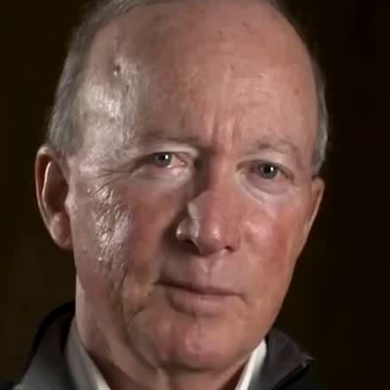

WavSyncSwap: End-to-End Portrait-Customized Audio-Driven Talking Face Generation
Submitted to ICASSP 2023
[Abstract]
Audio-driven talking face with portrait customization enhances the flexibility of
avatar applications for different scenarios, such as online meetings, mixed reality, and data
generation. Among the existing methods, audio-driven talking face and face swapping are typically
viewed as separate tasks that are cascaded to achieve the objective. Using state-of-the-art methods
Wav2Lip and SimSwap for this purpose, we meet some issues: affected mouth synchronization, lost
texture information, and slow inference speed. To resolve these issues, we propose an end-to-end
model that combines the advantages of both approaches. Our approach generates highly-synchronized
mouth with the aid of a pre-trained lip-sync discriminator. And identity information is provided by
ArcFace and the ID injection module in the model because of its strong correlation with facial
texture. Experimental results demonstrate that our method achieves lip-sync accuracy comparable to
real synced videos and preserves more texture details than cascade methods. Also, our approach
improves the inference speed.
[Demos]
Wav2Lip, SimSwap and our proposed method WavSyncSwap are trained on HDTF dataset. Given a target video, a source face image, and an arbitrary audio, our method can
generate a talking face video in which the identity information comes from the source face image,
the mouth shape is synchronized with the given audio, and the other parts come from the given target
video.
Generate videos with different identities and audios.
Target video
Target audio
Source face image
Result video: Cascade method (Wav2Lip -> SimSwap)
Result video: Proposed method (WavSyncSwap)
Target video
Target audio
Source face image
Result video: Cascade method (Wav2Lip -> SimSwap)
Result video: Proposed method (WavSyncSwap)

Generate videos with same identities and different audios.